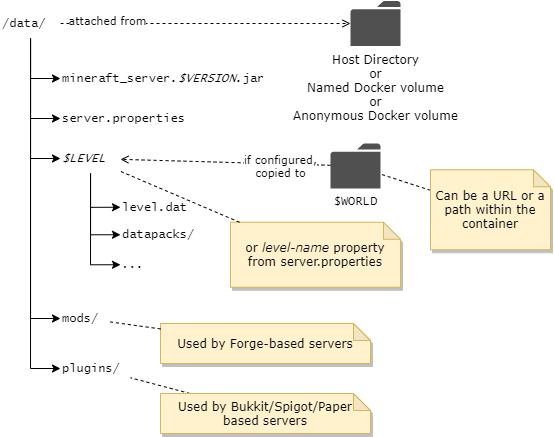

Data Directory
Everything the container manages is located under the container's /data path, as shown here:

Note
The container path /data is pre-declared as a volume, so if you do nothing then it will be allocated as an anonymous volume. As such, it is subject to removal when the container is removed.
Attaching data directory to host filesystem¶
In most cases the easiest way to persist and work with the minecraft data files is to use the volume mounting -v argument to map a directory on your host machine to the container's /data directory. In the following example, the path /home/user/minecraft-data must be a directory on your host machine:
-v /home/user/minecraft-data:/data
------------------------- -----
| |
| +-- must always be /data
|
+-- replace with a directory on your host machine
When attached in this way you can stop the server, edit the configuration under your attached directory and start the server again to pick up the new configuration.
With Docker Compose, setting up a host attached directory is even easier since relative paths can be configured. For example, with the following docker-compose.yml Docker will automatically create/attach the relative directory minecraft-data to the container.
version: "3"
services:
mc:
image: itzg/minecraft-server
ports:
- 25565:25565
environment:
EULA: "TRUE"
tty: true
stdin_open: true
restart: unless-stopped
volumes:
# attach a directory relative to the directory containing this compose file
- ./minecraft-data:/data
Note
if you have SELinux enabled, then you might need to add :Z to the end of volume mount specifications, as described here.
Converting anonymous /data volume to named volume¶
If you had used the commands in the first section, without the -v volume attachment, then an anonymous data volume was created by Docker. You can later bring over that content to a named or host attached volume using the following procedure.
Note
In this example, it is assumed the original container was given a --name of "mc", so change the container identifier accordingly.
You can also locate the Docker-managed directory from the Source field obtained from docker inspect <container id or name> -f "{{json .Mounts}}"
First, stop the existing container:
Use a temporary container to copy over the anonymous volume's content into a named volume, "mc" in this case:
Now you can recreate the container with any environment variable changes, etc by attaching the named volume created from the previous step:
docker run -d -it --name mc-new -v mc:/data -p 25565:25565 -e EULA=TRUE -e MEMORY=2G itzg/minecraft-server
Locating filesystem path of anonymous volume¶
The Source field from the output of this command will show where the anonymous volume is mounted from:
Note
On Windows with WSL the volumes path is \\wsl$\docker-desktop-data\data\docker\volumes